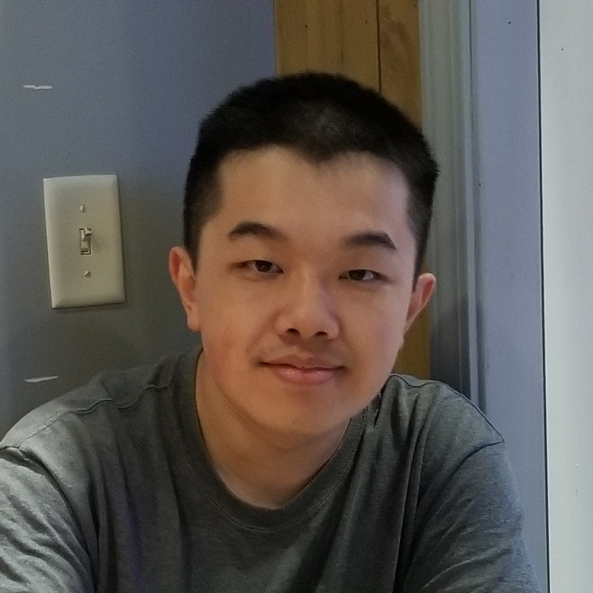

|
Greetings newcomer (or returning visitor) and welcome to my website! My name is Andrew Hou and I'm a 3rd year computer vision PhD student at Michigan State University specializing in face modeling problems, especially face relighting, face reconstruction, and shadow synthesis/removal. I am fortunately advised by Dr. Xiaoming Liu and am a member of the Computer Vision Lab. Previously, I received my Bachelor of Science from Brown University in Applied Mathematics and Computer Science.
In summer 2021, I was a research intern at Bosch in Sunnyvale, California, where I was fortunate to work with Drs. Xinyu Huang, Liu Ren, and Sharath Gopal on foreign shadow removal from face portraits. I will be returning to Bosch for another great summer this year!
Github | Google Scholar | LinkedIn |  |